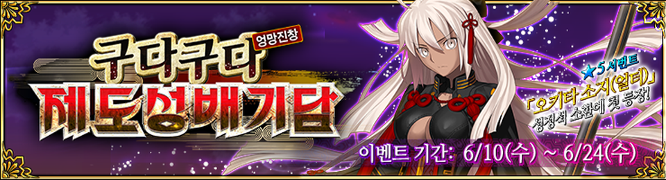
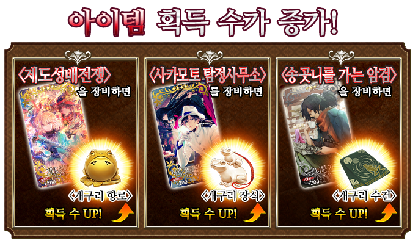
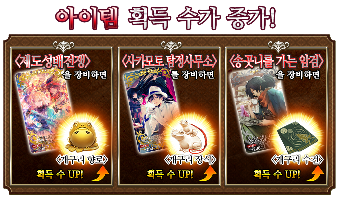

개요

개요
◆ 이벤트 기간 ◆
2020년 6월 10일(수) 점검 후 ~ 6월 24일(수) 23:59까지
◆ 이벤트 개요 ◆
｢구다구다 제도성배기담｣ 개최!
이번 이벤트에서는 메인퀘스트를 진행하면, 이벤트 한정 서번트 ｢4★ (SR) 사카모토 료마｣가 임시 가입합니다.
메인 퀘스트를 에필로그까지 클리어하고, ｢4★ (SR) 사카모토 료마｣를 정식으로 가입시키세요!
◆ 이벤트 참가조건 ◆
｢종국특이점｣을 클리어한 마스터
※ 아종특이점(Ⅰ부터 Ⅳ까지) 및, 제2부 프롤로그｢서｣를 클리어하실 필요는 없습니다.
구다구다 제도성배기담 CM공개중!!
이벤트 진행 방법
※기간한정 서번트「★4 (SR) 사카모토 료마」는, 나중에 개방되는 에필로그를 클리어하면 정식가입합니다.
이벤트 초기 단계에서 개방되는 메인퀘스트만 완료한 상태에서는 정식 가입하지 않습니다.
이점 주의하시기 바랍니다
이벤트를 즐기는 법
미션 시스템을 통한 보상 획득
이 이벤트에서는 '특정 아이템을 일정량 이상 모은다', '특정 종류의 에너미를 쓰러트린다' 등 다양한 조건을 달성하면 호화로운 보상을 획득할 수 있는 미션이 발생합니다!
미션을 클리어하고 보상을 받읍시다!
또한 미션 클리어 상황에 따라 새로운 퀘스트나 미션도 개방됩니다.
미션 달성 상황은 이벤트 보상 화면의 '미션 보상'에서 확인할 수 있습니다.
미션 일람에서 달성 완료한 미션 보상을 수령하세요!
※ 클리어 조건을 충족하기만 해서는 보상을 획득할 수 없습니다. 이 점 주의하시기 바랍니다.
※ 미션 보상을 수령하지 않으면 새로운 미션이나 구역이 출현하지 않는 경우가 있는 점 참고 부탁드립니다.
효율적인 공략방법
◆ 효율적인 공략방법 첫번째 ◆
대상 서번트는 구다구다 제도성배기담에서 공격력이 증가합니다!
해당 서번트를 강화하여 이벤트에 도전할 준비를 합시다!
[대상 서번트]

◆ 효율적인 공략방법 2번째 ◆
이벤트 아이템 교환으로 획득 가능한 이벤트 한정 개념예장 ｢하얀 옷의 수병 씨｣를 장비하면, 미션 클리어 조건의 대상이 되는 에너미의 추가 출현 확률이 늘어납니다.
※ 각 퀘스트에서 에너미의 추가 출현확률 표시는 100% 이상이 되더라도, 효과는 100%까지만 적용되니 주의해주세요.
｢4★ (SR) 하얀 옷의 수병 씨｣
기간한정 이벤트 ｢구다구다 제도성배기담｣에서 [노부 계열] 추가 출현확률이 증가!
※ 추가 출현확률이 증가하는 [노부 계열] 에너미에는 [거대 노부]등의 이벤트 한정 에너미도 포함됩니다.
◆ 효율적인 공략방법 두번째 ◆
성정석 소환에서 픽업되는 기간한정 개념예장 「제도성배전쟁」, 「사카모토 탐정사무소」, 「송곳니를 가는 암검」을 장비하면, 기간한정 이벤트 ｢구다구다 제도성배기담｣에서 이벤트 전용 아이템 「개구리 향로」, 「개구리 장식」, 「개구리 수건」의 드랍수가 늘어납니다.
※ 각 퀘스트의 아이템 드랍률은 100%가 아닌 점을 주의해주세요.

｢5★ (SSR) 제도성배전쟁｣
기간한정 이벤트 ｢구다구다 제도성배기담｣에서 「개구리 향로」의 드랍수를 1 늘린다.
｢4★ (SR) 사카모토 탐정사무소｣
기간한정 이벤트 ｢구다구다 제도성배기담｣에서 「개구리 장식」의 드랍수를 1 늘린다.
｢3★ (R) 송곳니를 가는 암검｣
기간한정 이벤트 ｢구다구다 제도성배기담｣에서 「개구리 수건」의 드랍수를 1 늘린다.
이벤트 한정 보수
사카모토 료마
◆ 영기재림 ◆
이벤트 기간 중 「미션 보상」으로밖에 얻을 수 없는 ｢해원대 깃발｣을 사용해서
영기재림을 4번 반복하면 세인트 그래프에 변화가!
※ 사카모토 료마는 영기재림에 의한 배틀 캐릭터의 외형 변화가 없습니다.
◆ 이벤트 전용 개념 예장 EXP 카드 ◆
이벤트 퀘스트 클리어 보상으로, 개념예장을 대폭으로 강화할 수 있는 EXP카드가 등장합니다!
이번 기회에 꼭 마음에 드는 개념예장을 강화해주세요!
사카모토 료마의 보구연출을 소개!
이벤트 아이템 교환
◆ 교환기간 ◆
2020년 6월 10일(수) 점검 후 ~ 7월 1일(수) 23:59까지
※ ｢개구리 향로｣, ｢개구리 장식｣, ｢개구리 수건｣은 교환 기간 종료 후 소멸합니다.
이벤트 전용 아이템은, 터미널 화면 오른쪽 위의 「이벤트 보상」 버튼을 터치해서 「이벤트 아이템 교환」 화면에서, 다음 아래 아이템과 교환할 수 있습니다.
◆ 개구리 향로 ◆
◆ 개구리 장식 ◆
◆ 개구리 수건 ◆
고난이도 퀘스트: 챌린지 퀘스트
모든 이벤트 퀘스트를 클리어하면,
고난이도 퀘스트 《챌린지 퀘스트》가 개방됩니다.
챌린지 퀘스트는 클리어 후에도 소멸하지 않으며, 여러 번 도전할 수 있습니다.
서번트 및 개념예장의 편성을 변경하여 재도전하실 수 있습니다.
※ 퀘스트 클리어 보상, 전리품, 마스터 EXP, 마술예장 EXP, 인연포인트를 획득할 수 있는 것은 첫 클리어 시에 한정됩니다.
◆ 챌린지 퀘스트 참가조건 ◆
기간한정 이벤트 ｢구다구다 제도성배기담｣의 모든 메인 퀘스트를 클리어
◆ 챌린지 퀘스트 첫 클리어 보상 ◆
전승결정 x1
마이룸이 기간한정으로 특별사양으로 변경!
기간한정 이벤트 ｢구다구다 제도성배기담｣ 개최중, 마이룸이 기간한정으로 특별사양으로 변경됩니다!
2020년 6월 10일(수) 점검 후 ~ 6월 24일(수) 23:59까지
｢구다구다 제도성배기담｣ 개최!
이번 이벤트에서는 메인퀘스트를 진행하면, 이벤트 한정 서번트 ｢4★ (SR) 사카모토 료마｣가 임시 가입합니다.
메인 퀘스트를 에필로그까지 클리어하고, ｢4★ (SR) 사카모토 료마｣를 정식으로 가입시키세요!
｢종국특이점｣을 클리어한 마스터
※ 아종특이점(Ⅰ부터 Ⅳ까지) 및, 제2부 프롤로그｢서｣를 클리어하실 필요는 없습니다.
구다구다 제도성배기담 - CM!
애니메이션 제작: A-1 Pictures※기간한정 서번트「★4 (SR) 사카모토 료마」는, 나중에 개방되는 에필로그를 클리어하면 정식가입합니다.
이벤트 초기 단계에서 개방되는 메인퀘스트만 완료한 상태에서는 정식 가입하지 않습니다.
이점 주의하시기 바랍니다
| 에필로그 개방일시 |
|---|
| 2018년 6월 17일(수) 18:00 |
이 이벤트에서는 '특정 아이템을 일정량 이상 모은다', '특정 종류의 에너미를 쓰러트린다' 등 다양한 조건을 달성하면 호화로운 보상을 획득할 수 있는 미션이 발생합니다!
미션을 클리어하고 보상을 받읍시다!
또한 미션 클리어 상황에 따라 새로운 퀘스트나 미션도 개방됩니다.
미션 달성 상황은 이벤트 보상 화면의 '미션 보상'에서 확인할 수 있습니다.
미션 일람에서 달성 완료한 미션 보상을 수령하세요!
※ 클리어 조건을 충족하기만 해서는 보상을 획득할 수 없습니다. 이 점 주의하시기 바랍니다.
※ 미션 보상을 수령하지 않으면 새로운 미션이나 구역이 출현하지 않는 경우가 있는 점 참고 부탁드립니다.
대상 서번트는 구다구다 제도성배기담에서 공격력이 증가합니다!
해당 서번트를 강화하여 이벤트에 도전할 준비를 합시다!
| 클래스 | 레어도 | 서번트 |
|---|---|---|
| 세이버 | ★★★★★ | 오키타 소지 |
| 아처 | ★★★★ | 에미야 |
| 아처 | ★★★★ | 오다 노부나가 |
| 랜서 | ★★★★ | 신창 이서문 |
| 라이더 | ★★★★ | 사카모토 료마 |
| 라이더 | ★★★ | 메두사 |
| 캐스터 | ★★★ | 메데이아 |
| 어새신 | ★★★★★ | 수수께끼의 히로인 X |
| 어새신 | ★★★ | 오카다 이조 |
| 버서커 | ★★★★★ | 수수께끼의 히로인 X 얼터 |
| 버서커 | ★★★★★ | 히지카타 토시조 |
| 버서커 | ★★★★ | 차차 |
| 얼터에고 | ★★★★★ | 오키타 소지 (얼터) |
이벤트 아이템 교환으로 획득 가능한 이벤트 한정 개념예장 ｢하얀 옷의 수병 씨｣를 장비하면, 미션 클리어 조건의 대상이 되는 에너미의 추가 출현 확률이 늘어납니다.
※ 각 퀘스트에서 에너미의 추가 출현확률 표시는 100% 이상이 되더라도, 효과는 100%까지만 적용되니 주의해주세요.
기간한정 이벤트 ｢구다구다 제도성배기담｣에서 [노부 계열] 추가 출현확률이 증가!
※ 추가 출현확률이 증가하는 [노부 계열] 에너미에는 [거대 노부]등의 이벤트 한정 에너미도 포함됩니다.
성정석 소환에서 픽업되는 기간한정 개념예장 「제도성배전쟁」, 「사카모토 탐정사무소」, 「송곳니를 가는 암검」을 장비하면, 기간한정 이벤트 ｢구다구다 제도성배기담｣에서 이벤트 전용 아이템 「개구리 향로」, 「개구리 장식」, 「개구리 수건」의 드랍수가 늘어납니다.
※ 각 퀘스트의 아이템 드랍률은 100%가 아닌 점을 주의해주세요.

기간한정 이벤트 ｢구다구다 제도성배기담｣에서 「개구리 향로」의 드랍수를 1 늘린다.
기간한정 이벤트 ｢구다구다 제도성배기담｣에서 「개구리 장식」의 드랍수를 1 늘린다.
기간한정 이벤트 ｢구다구다 제도성배기담｣에서 「개구리 수건」의 드랍수를 1 늘린다.
이벤트 기간 중 「미션 보상」으로밖에 얻을 수 없는 ｢해원대 깃발｣을 사용해서
영기재림을 4번 반복하면 세인트 그래프에 변화가!
※ 사카모토 료마는 영기재림에 의한 배틀 캐릭터의 외형 변화가 없습니다.
이벤트 퀘스트 클리어 보상으로, 개념예장을 대폭으로 강화할 수 있는 EXP카드가 등장합니다!
이번 기회에 꼭 마음에 드는 개념예장을 강화해주세요!
사카모토 료마 - 하늘을 나는 용과 같이
2020년 6월 10일(수) 점검 후 ~ 7월 1일(수) 23:59까지
※ ｢개구리 향로｣, ｢개구리 장식｣, ｢개구리 수건｣은 교환 기간 종료 후 소멸합니다.
이벤트 전용 아이템은, 터미널 화면 오른쪽 위의 「이벤트 보상」 버튼을 터치해서 「이벤트 아이템 교환」 화면에서, 다음 아래 아이템과 교환할 수 있습니다.
 |
[기간한정 개념예장]
|
 |
[기간한정 개념예장]
|
 |
[기간한정 개념예장]
|
모든 이벤트 퀘스트를 클리어하면,
고난이도 퀘스트 《챌린지 퀘스트》가 개방됩니다.
챌린지 퀘스트는 클리어 후에도 소멸하지 않으며, 여러 번 도전할 수 있습니다.
서번트 및 개념예장의 편성을 변경하여 재도전하실 수 있습니다.
※ 퀘스트 클리어 보상, 전리품, 마스터 EXP, 마술예장 EXP, 인연포인트를 획득할 수 있는 것은 첫 클리어 시에 한정됩니다.
기간한정 이벤트 ｢구다구다 제도성배기담｣의 모든 메인 퀘스트를 클리어
전승결정 x1
기간한정 이벤트 ｢구다구다 제도성배기담｣ 개최중, 마이룸이 기간한정으로 특별사양으로 변경됩니다!
 391,306
391,306 575,540
575,540 556,288
556,288 154,416
154,416